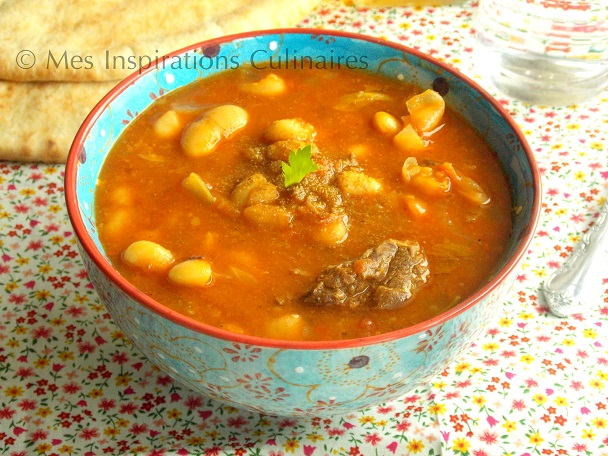

Loubia Hamra

Description
La Loubia algérienne une délicieuse soupe aux haricots blanc qui
fait partie du patrimoine de la cuisine algérienne.
Une soupe réconfortante durant nos longues soirées hivernales.
Ingrédients
- 125 g de haricots blanc trempe la veille
- 3 tomates broyées
- 1 cuillères a soupe de sauce tomate
- 1 gousse d'ail/li>
- 1 carotte
- 1 cuillère a soupe de Paprika
- ½ c-a-c de cum
- Huile d'olive pour le service
- vinaigre pour le service
Etapes
- Commencer par nettoyer les légumes (cèleri et carotte) et les couper en mirepoix, émincer l'oignons et écraser l'ail.
- Blanchir les haricots blancs quelques minutes (pas trop car on va continuer la cuisson dans la sauce).
- chauffer l'huile d'olive (2 c-a-s) dans la cocotte, et faire revenir l'oignons émincé, ajouter les haricots égouttés, les tomates mixées, la sauce tomate, les légumes (carotte, cèleri, et l'ail), les épices (sel, poivre noir, cumin et paprika et curcumin).
- Mouiller avec un petit verre d'eau et laisser imprégner les épices 3 minutes. Ne pas oublier d'ajouter les feuilles de cèleri.
- Ajouter l'eau suffisamment pour couvrir les haricots (il faut assez d'eau car les haricots absorbent). Laisser cuire à couvert (personnellement je laisse cuire 20 min après le sifflement et ensuite si les haricots ne sont pas assez cuit je continue la cuisson avec un couvert sans fermer la cocotte et je surveille ma cuisson).
- Servir la soupe aux haricots avec un filet d'huile d'olive arroser de vinaigre, et parsemer de cumin. (le vinaigre apporte un gout très agréable à la soupe).